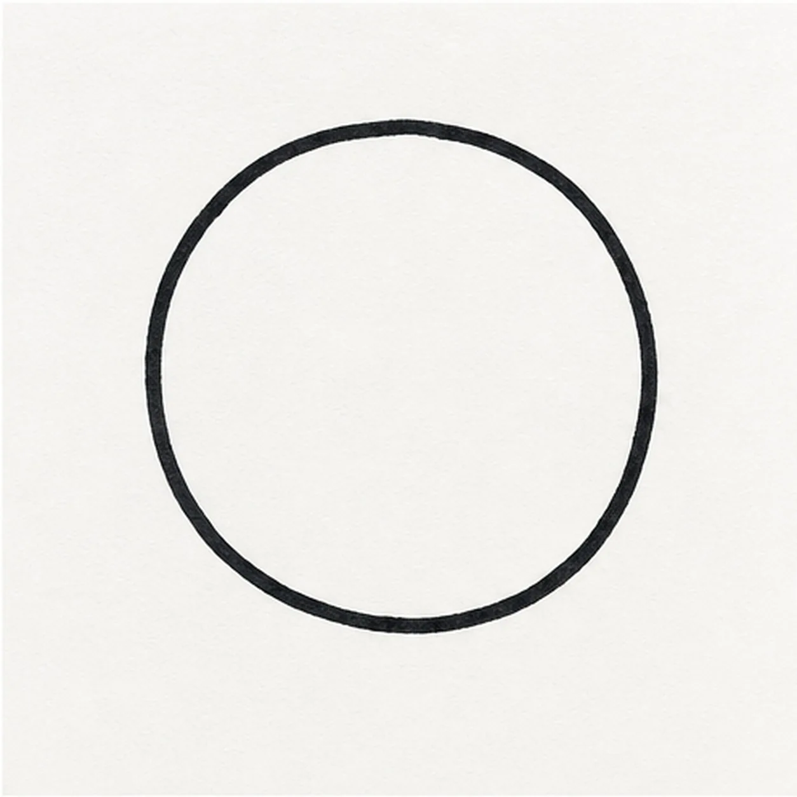
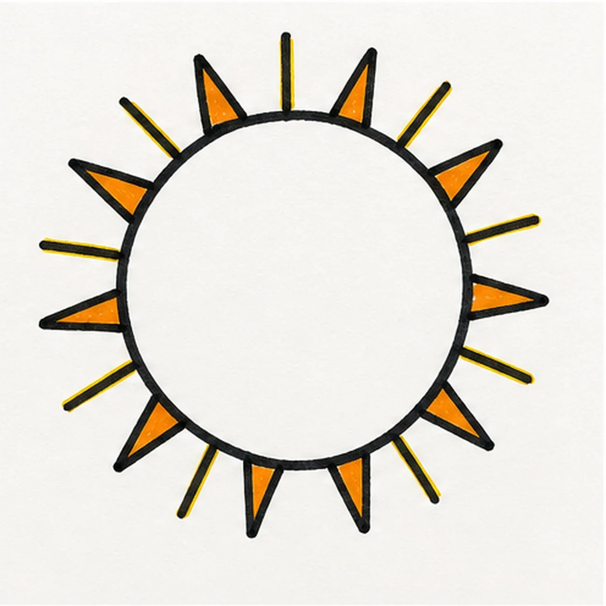
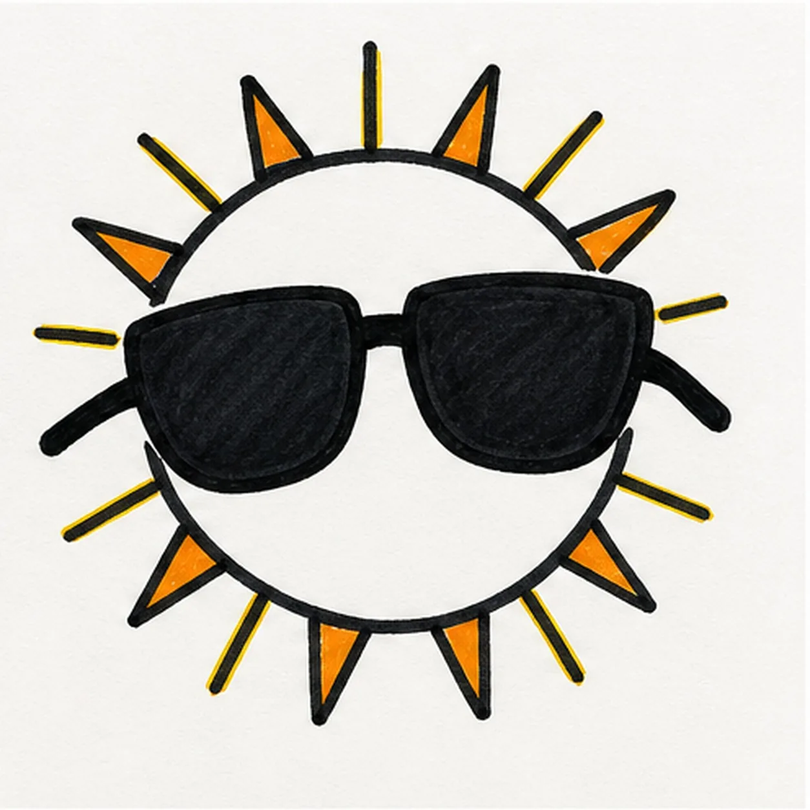
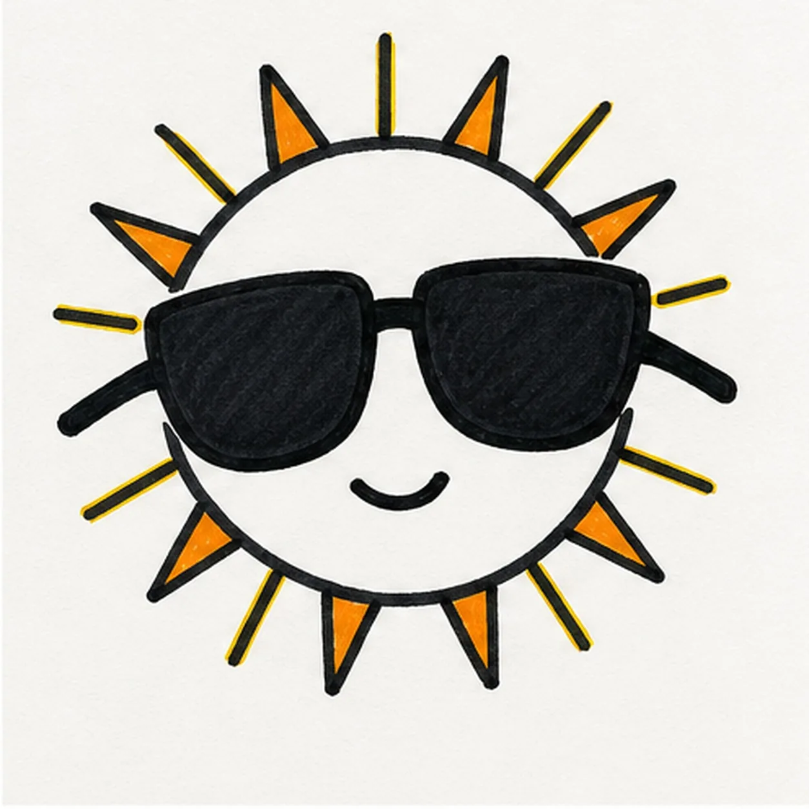
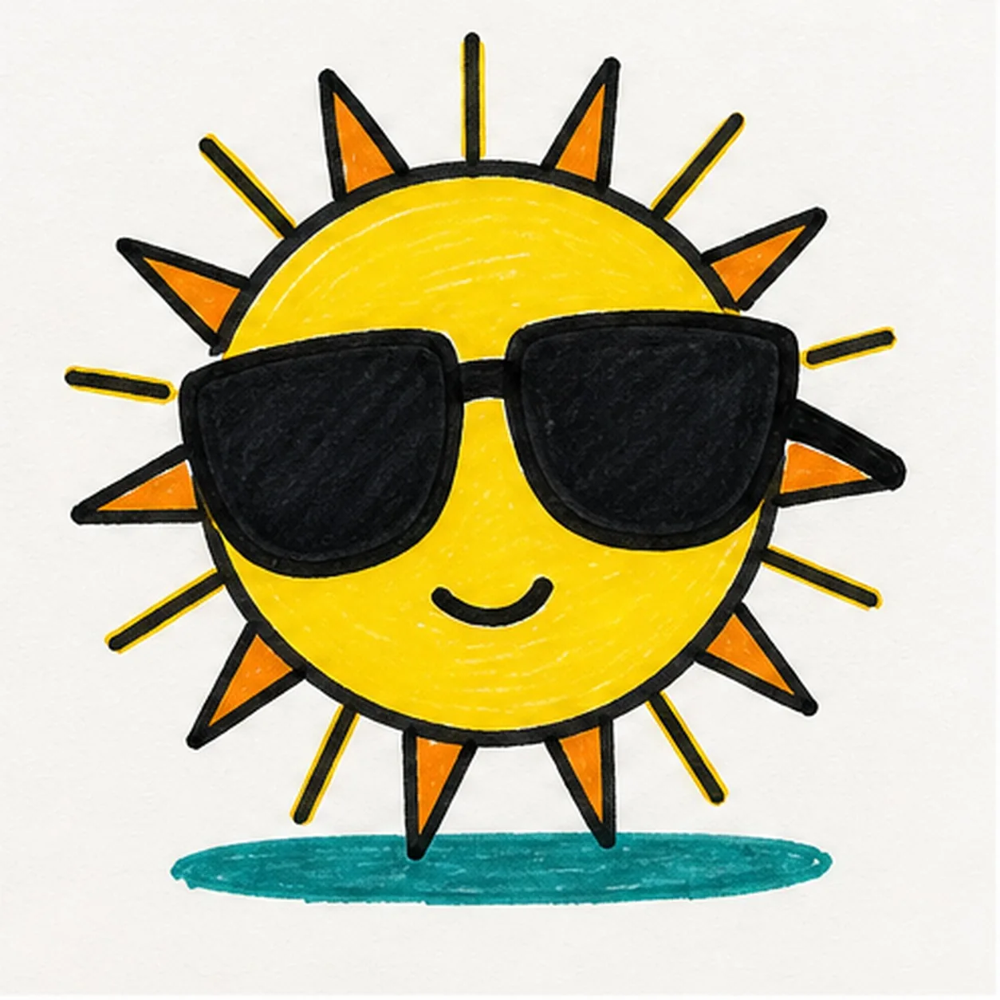

Felt-tip marker mode
Let's draw a comic sun with sunglasses
Treat this as one playful practice round: sketch the idea loosely, simplify the shapes, then commit with confident marker outlines and bright fills.
-
01

Draw the sun circle
Use a light construction pass to draw one large centered sun circle.
Doodle tip: Ghost the circle several times before committing. Let it stay a touch handmade instead of chasing a perfectly mechanical loop.
-
02

Radiate the rays
Add an even ring of alternating straight and triangular rays around the established circle, giving the triangular rays orange marker accents.
Doodle tip: Work around the circle in opposite pairs. That quick habit keeps the rays feeling balanced without measuring every gap.
-
03

Drop in the shades
Draw and black-fill two oversized sunglasses lenses, their bridge, and short arms across the existing sun circle.
Doodle tip: Pull each lens outline in one confident pass, then fill inward. The glasses should hide the eyes completely so the simple mouth can carry the expression.
-
04

Add the small smile
Place one short relaxed curved smile below the established sunglasses.
Doodle tip: Keep the mouth small and low. Leaving lots of open yellow space stops the face from becoming crowded.
-
05

Fill the summer color
Fill the existing sun circle yellow and add a small teal shadow under it.
Doodle tip: Follow the curve of the sun with your marker strokes and let a little texture show. Smooth-but-not-perfect fill feels more alive than a solid digital block.
-
06

Let the sun shine
Reinforce the existing outlines, tidy the yellow, orange, teal, and black fills, and add tiny white highlights to the already drawn sunglasses.
Doodle tip: Stop before adding clouds, words, or a border. The ray pattern, shades, and small smile already make a clear comic character.